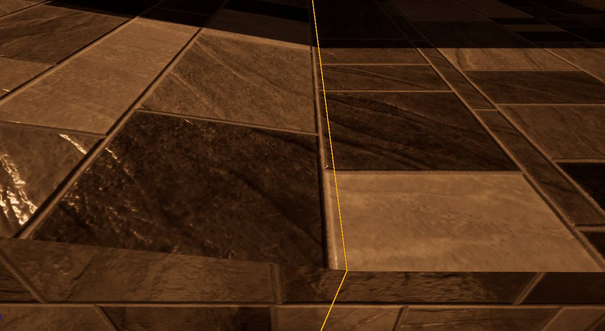
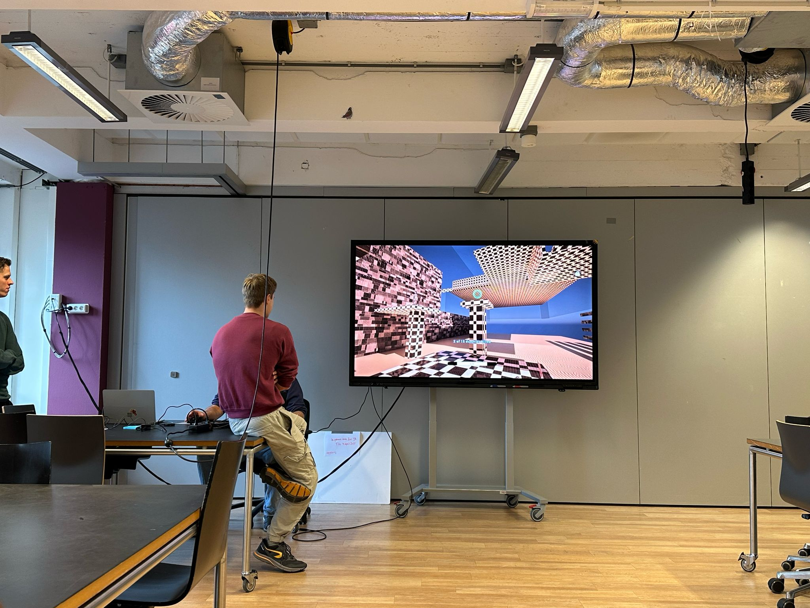

Pooker Dash

Pooker Dash
Pooker Dash is a game I made for a school project. It's a short game focused around melee combat and involving multiple combos. The goal is to kill all the 15 AI robots who will chase you down and attack you with swords. The player can pick up health packs to survive, and has to use dashing mechanics to traverse the map.
Gameplay demonstration
The Dash Mechanic perfectly illustrates my workflow. I am perfectionistic and consistent. This is reflected in how the blueprint is structured. This dash mechanic alone is very complex — but for a reason: I want to make sure it feels good and is 100% consistent and logical. The dash includes 10 variables that can be adjusted:
Dash speed – determines how far the dash goes
Dash jump height – a small jump that pushes the player into the air to make the dash smoother
Dash jump vertical falloff start point – how far up I can look before the horizontal dash speed gradually decreases
Dash cooldown – minimum time between dashes
Dash friction delay – the delay before friction is applied (on ground and in air) to make the dash feel smooth
Dash speed vertical – how much vertical (Z-axis) speed the dash has
Dash speed max force threshold – the percentage of vertical slope at which the horizontal dash speed starts decreasing (hard to explain)
Dash min horizontal force – the minimum value from the previously mentioned calculation
Dash falling/ground friction - how much resistance the player experiences during a dash, both on the ground and in the air
View full blueprintZoom out to view full blueprint (to bottom right)
For the Melee Combat Mechanics (Sword) I use a “Multi Box Traces By Profile” because I want to be able to hit multiple dummies at once. I add them all to an array. Because it's possible to overlap, stop overlapping, and then quickly overlap again within the same hit window, it would be possible to do more than one damage per dummy (for example: hit, look away, then look back — all within the 0.3 second window of a sword hit). That's why I made it so that if a dummy has already been added to the array, it cannot be hit again during the same attack. After that, I reset the array so the same dummies can be hit again on the next sword swing. I also added animations and ensured they play in a multiplayer environment. All animations are custom-made. Additionally, I made sure to check what is being hit with the hitbox. I change the sound depending on whether I hit a dummy, a wall, or an item. I also ensured that a wall blocks the hitbox, but a dummy or player does not — so if multiple dummies or players are standing in a row, you can hit them all at once
View full blueprintZoom out to view full blueprint
In terms of Textures, I made sure they use absolute world position, so for example, if I create something like a hill, the textures blend seamlessly into one another. Here's an example: on the left, the ground rises — these are actually two different cubes, but their textures transition smoothly into one another. This also ensures that when I stretch an object, the texture doesn’t stretch with it. The absolute world position applies to both horizontal and vertical textures — at a 45-degree angle, it switches from horizontal to vertical mapping.
 View full blueprintZoom out to view full blueprint
I presented the game at our university and let the teacher play it.
There's much more that's gone into this little project, and countless of hours of bug testing and experimentation. I have really enjoyed working on this and I'm still improving on this project, so this demonstration might be outdated by the time you read this!